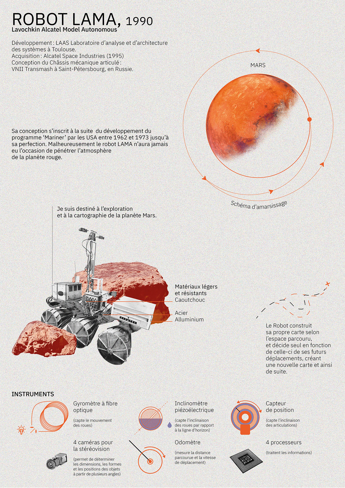
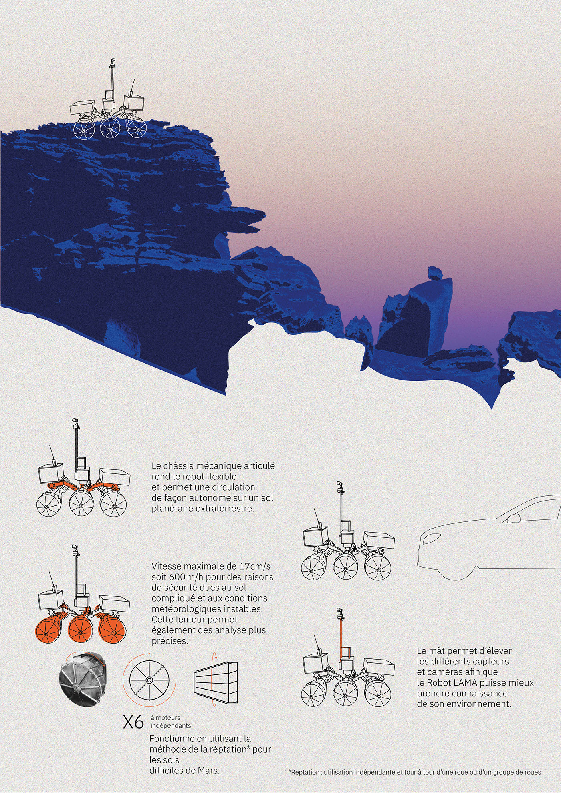
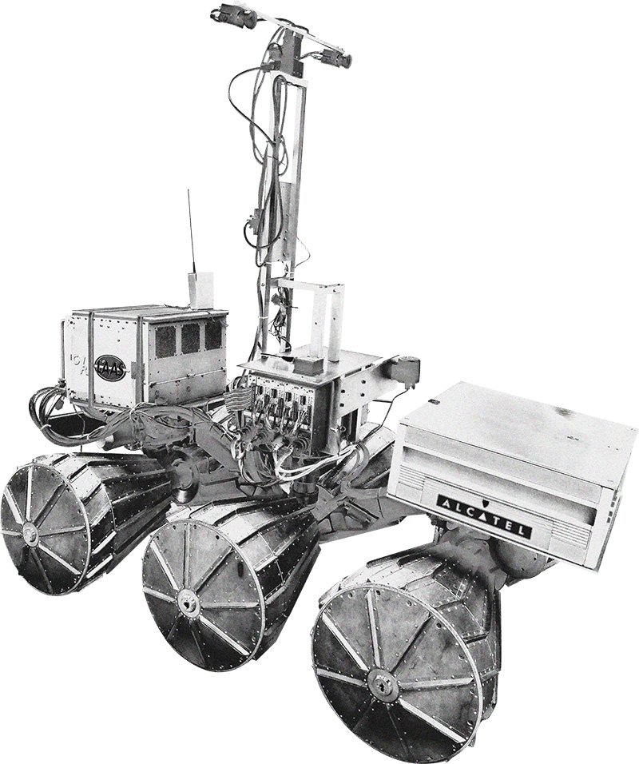

LAMA,
Lavochkin Alcatel Model Autonomous
Le robot incarne une collaboration internationale entre l'entreprise russe Lavochkin Association, renommée pour ses technologies aérospatiales, et l'entreprise française Alcatel, spécialiste des télécommunications.
Le terme "Model Autonomous" indique qu'il s'agit d'un modèle capable de fonctionner de manière indépendante, grâce à des technologies avancées de navigation et de prise de décision.